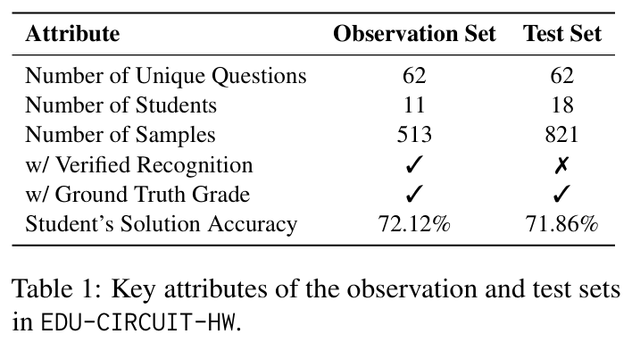

Original handwritten image
Interactive Examples
Browse expert-rectified transcripts alongside the original student image.
The examples below are copied from the expert-rectified observation-set annotations. Each example comes from a different homework and a different student, showing the diversity of real student handwriting, symbolic notation, and circuit reasoning in the dataset.
Expert-rectified LaTeX transcript
Loading transcript...
Dataset Overview
Authentic university STEM homework, not isolated textbook snippets.
EDU-CIRCUIT-HW contains handwritten student solutions from an undergraduate circuit analysis course at a large research university in the southeastern United States. Each sample pairs a real handwritten submission with expert-supported evaluation artifacts, enabling us to study recognition fidelity and auto-grading robustness together rather than in isolation.
The observation split includes expert-verified near-verbatim transcripts of student work, while the held-out test split preserves realistic deployment conditions with ground-truth grades but no expert rectifications. This makes the dataset useful both for diagnosing visual failures and for measuring their downstream impact.
Observation set
513 solutions from 11 students, each with verified recognition and detailed grades.
Test set
821 solutions from 18 additional students with ground-truth grades for realistic evaluation.
Why it matters
The benchmark exposes latent recognition failures that can stay hidden when downstream grading criteria only inspect a subset of the student solution.

Research Findings
Recognition quality and grading quality can drift apart.
Current MLLMs can appear strong on downstream grading while still making substantial upstream visual recognition mistakes in equations, symbols, diagrams, and reasoning traces.
EDU-CIRCUIT-HW evaluates both recognition and grading, making it possible to study how recognition errors cascade into high-stakes educational decisions.
In the paper's case study, error-aware routing and correction improved robustness with only minimal human intervention, sending 3.3% of assignments to human graders while the rest were handled by GPT-5.1.